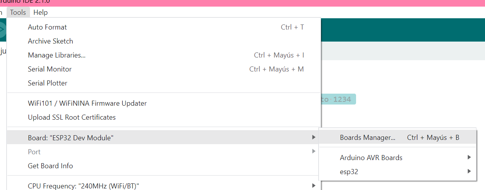
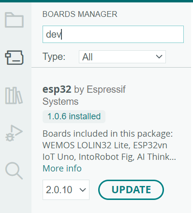

Para instalar Arduino debes dirigirte al sitio oficial en este link.
Una vez hayas finalizado la instalación dirígete a la pestaña superior y relaliza las siguientes selecciones: Tools > Board: > Board Manager
Escribir "dev" y descargar el paquete "esp32".
